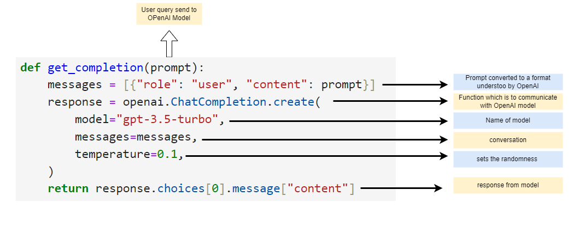

In the last chapter, we have used a pre-defined helper function to send request to OpenAI and get response.

Warning: package 'gt' was built under R version 4.3.1
Explanation of helper function
Element
Description
prompt
User query send to OpenAI
messages
When a user sends a query in plain text, It has to be converted into list format which is understood by OpenAI. Every prompt has to be converted in this format
ChatCompletion Function
Function which is used to communicate to OpenAI
model
The name of model which a developer wants to interact It can be gpt 3.5 turbo, gpt 4 etc
temperature
Temperature sets the randomness of the response. It is set to 0, the model is too deterministic and accurate. Use this option when accuracy is priority for e.g. code generation
response
Model returns output as response object which contains list of choices.
Understanding the response object
In the previous, section we saw the elements of helper function. When we call OpenAI ChatCompletion, we get their response as response object. Lets see the components of response.
We’ll modify the helper function, where we’ll see the response object directly to calling function.
prompt ="Who discovered the laws of motion"response = get_completion(prompt)print(response)
Output:
{
"id": "chatcmpl-8FPlpp8IMyWHneFYuXZQqKkKGK461",
"object": "chat.completion",
"created": 1698684673,
"model": "gpt-3.5-turbo-0613",
"choices": [
{
"index": 0,
"message": {
"role": "assistant",
"content": "The laws of motion were discovered by Sir Isaac Newton."
},
"finish_reason": "stop"
}
],
"usage": {
"prompt_tokens": 13,
"completion_tokens": 1,
"total_tokens": 24
}
}
As, you can see above, the output of OpenAI ChatCompletion is a json object. Few keys are self explanatory, we can skip those and understand others by breaking into small parts.
Choices
ChatCompletion.create function from OpenAI returns a response object like above.. In order to understand better, we’ll break it and see output step wise.
response.choices
Output:
[<OpenAIObject at 0x15932c6f950> JSON: {
"index": 0,
"message": {
"role": "assistant",
"content": "The laws of motion were discovered by Sir Isaac Newton."
},
"finish_reason": "stop"
}]
This command will extract the choices from response which is a list of JSON. This list has only elements with JSON format. It has three keys index, message and finish_reason.
response.choices[0]
<OpenAIObject at 0x22ea8fcfc50> JSON: {
"index": 0,
"message": {
"role": "assistant",
"content": "The laws of motion were discovered by Sir Isaac Newton."
},
"finish_reason": "stop"
}
Since, response.choices is a list with one element, this statement below 👇🏾 fetch the the first element from the list which is a json.
response.choices[0].message
Output:
<OpenAIObject at 0x15932c6f9b0> JSON: {
"role": "assistant",
"content": "The laws of motion were discovered by Sir Isaac Newton."
}
The message json has two elements, role and content which we generally use while bulding AI applications.
Finally, we’ll use this statement to fetch the response from OpenAI ChatCompletion.
response.choices[0].message["content"]
Output:
'The laws of motion were discovered by Sir Isaac Newton.'
Get Usage data
Many times, there are requirement from business to keep track of total token usages. We can use the same response object to fetch token.
If you see the content of response, 👇🏾👇🏾, it has another key usage.
{ "id": "chatcmpl-8FPlpp8IMyWHneFYuXZQqKkKGK461", "object": "chat.completion", "created": 1698684673, "model": "gpt-3.5-turbo-0613", "choices": [ { "index": 0, "message": { "role": "assistant","content": "The laws of motion were discovered by Sir Isaac Newton." }, "finish_reason": "stop" } ], "usage": { "prompt_tokens": 13, "completion_tokens": 1, "total_tokens": 24 } }
We can extract usage using.
response.usage
<OpenAIObject at 0x22ea8fcf950> JSON: {"prompt_tokens": 13,"completion_tokens": 11,"total_tokens": 24}
It has three keys prompt_tokens, completion_tokens, total_tokens.
To track the use of tokens, you can use
response.usage["total_tokens"]
24
Summary
In this chapter, we discussed the structure of helper function we created and OpenAI’s ChatCompletion.